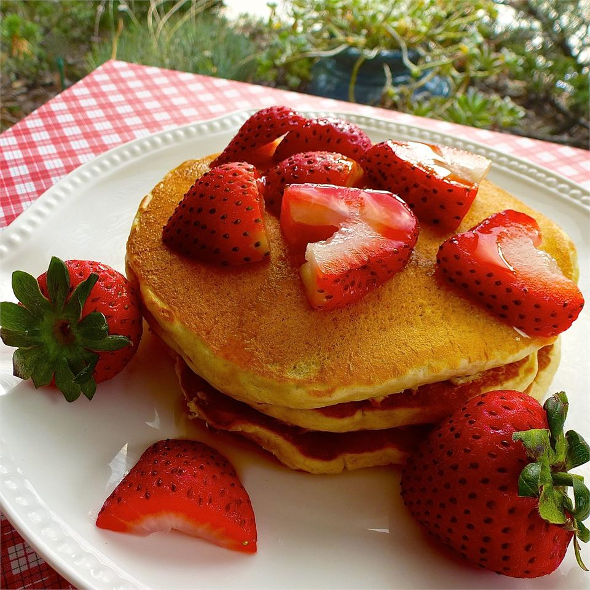

Oatmeal Pancakes

Description
I make this for my kids quite often. It is very simple. Preparing the batter in the food processor makes it that much easier. Serve with syrup and butter. Also good with applesauce!
Ingredients
- 1/2 cup All-Purpose Flour
- 1/2 cup Quick Cooking Oats
- 1 Tablespoon White Sugar
- 1 teaspoon Baking Powder
- 1/2 teaspoon Baking Soda
- 1/2 teaspoon Salt
- 3/4 cup Buttermilk
- 1 teaspoon Vanilla Extract
- 2 Tablespoon Vegetable Oil
- 1 Egg
Steps
- Place flour, oats, sugar, baking powder, baking soda, salt, buttermilk, vanilla, oil and egg in a food processor and puree until smooth.
- Heat a lightly oiled griddle or frying pan over medium high heat. Pour or scoop the batter onto the griddle, using approximately 1/4 cup for each pancake. Brown on both sides and serve hot.